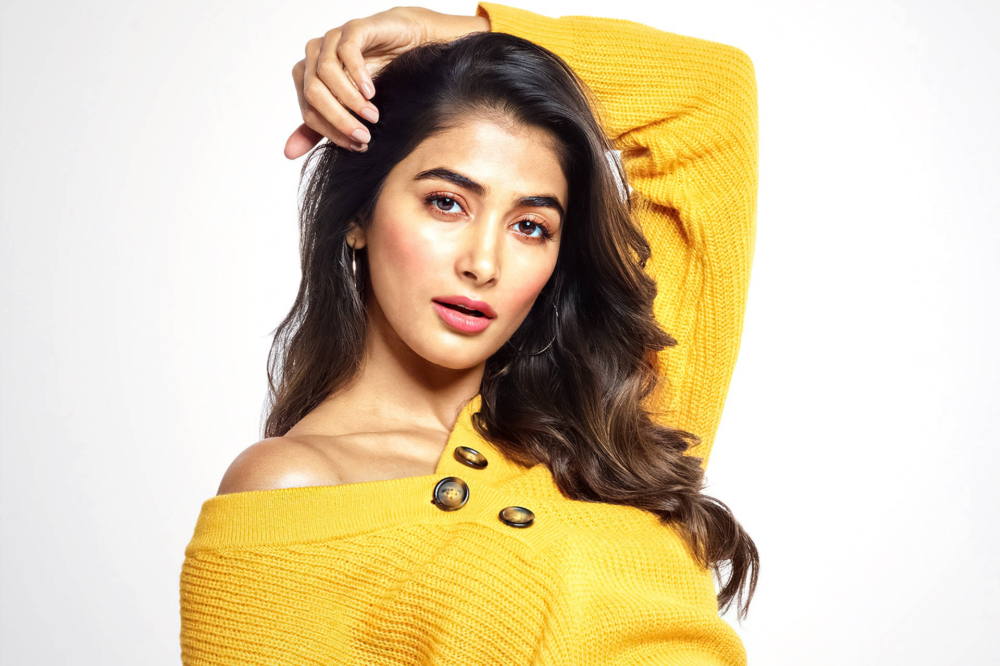

Pooja Hegde was born in Maharashtra, Mumbai, India on 13 October 1990.
She is an Indian Film Actress and Model known for her roles in films such as Tamil, Telugu and Hindi.
Personal Life:
She was born into a Hindu family to Manjunath Hegde and Latha Hegde. She has a sibling named Rishabh Hegde.
The Pooja Hegde family belongs predominantly to the "Udupi." She speaks not only Hindi but also speaks other languages (Tamil, Telugu, Kannada and English) really well.
Career
Pooja has been attracted to modelling and fashion since her childhood and then she chose to begin her career as a model and actress. While she was studying, she began chasing her hopes of competing in modelling assignments.
She took part in the 2010 'Miss Universe India' contest where she became the 'second runner-up.' She focused her path into films after this. To get the break-in movies she met several southern filmmakers, and "Mughmodo" was her first ever film of her career.
To get chance in cinema, she approached several south film producers and "Mughmodo" was her first film in her career.
She got another film offer named "Oka Laila Kosam." After that, she met several offers and took part in several south Indian films. She did her acting debut in Bollywood with the movie "Mohanjo Dara," directed by Ashutosh Govarikar, which she featured in 2016 opposite Hrithik Roshan.
The movie was block buster hit at the box office and she switched to the south again. After launching her Bollywood, she had few Telugu movie launches, including Saakshyam, Aravinda Sametha Veera Raghava and Maharshi.
Her films all went well at box office and she was seen in Bollywood film Housefull 4.